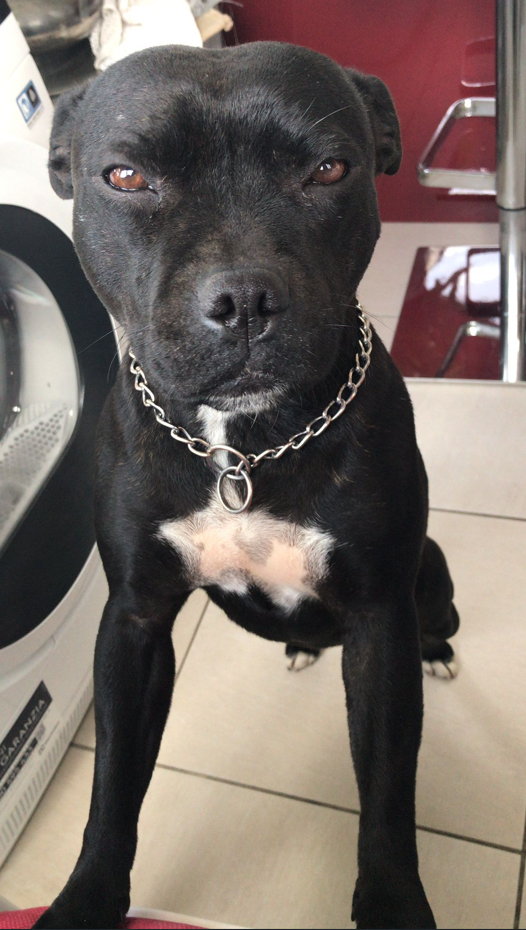
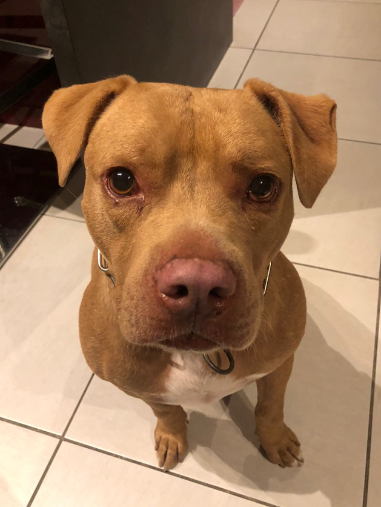

Ciao. Mi chiamo Alessandro Priano, 27 anni di Palermo. Mi sono graduato in ingegneria informatica ed automazione a Luglio 2022 tramite l'università telematica di Ecampus!
L'informatica in generale è sempre stata intrigante. Ho sempre avuto un rapporto molto intuitivo con l'informatica anche su argomenti dove non avevo minimanete esperieza, come se venisse quasi naturale. Tuttavia non ho mai avuto l'occasione di lavorare in alcun modo, specialemente in questo ambito. La programmazione in sè mi ha sempre affascinato e pertanto mi piacerebbe intraprendere questa direzione che reputo adatta allo mio stile di vita e alle mie capacità sebbene molto inesperte.
Mi reputo una persona molto calma, deduttiva ed un buon ascoltatore. Riesco ad avere conversazioni con persone piacevoli anche perché riesco a immedesimarmi quasi sempre con l'interlocutore. Non mi piace esagerare in nessuna situazione e questo mi aiuta molto nell'avere un quadro generale in tutte le cose.
Sono un giocatore accanito quindi sono apertissimo nel parlare di videogiochi!
Dimenticavo di mostravi le mie belle cagnoline!
 